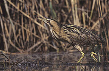
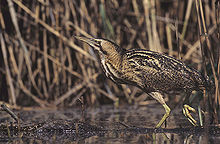

| Eurasian Bittern | |
|---|---|
|  | |
| Conservation status | |
| Binomial name | |
| Botaurus stellaris (Linnaeus, 1758) |
| Eurasian Bittern | |
|---|---|
|  | |
| Conservation status | |
| Binomial name | |
| Botaurus stellaris (Linnaeus, 1758) |
The Eurasian Bittern or Great Bittern (Botaurus stellaris) is a wading bird of the heron family Ardeidae.
Bitterns are thickset herons with bright, pale, buffy-brown plumage covered with dark streaks and bars, similar in appearance to the to the American Bittern, Botaurus lentiginosa. The Eurasian or Great Bittern is 69–81 cm (24"-34") in length, with a 100–130 cm wingspan. Their most distinctive feature is the males booming call in spring.
Bitterns feed on fish, eels, amphibians and invertebrates, hunting along the reed margins in shallow water.
Males are polygamous with each mating with up to five females. The nest is built in the previous year's standing reeds and consists of a platform some 30 cm across. Four or five eggs are laid in late March and April and incubated by the female bird. After hatching, the chicks spend about two weeks in the nest and then disperse amongst the reeds.

.jpg){kind=link}